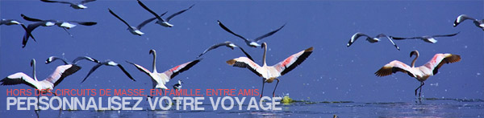

La Kenia sur Mesure

La Tanzanie est la terre idéale et privilegiée des amateurs de la savane et vie sauvage,regorgeant de beaux paysages et endroits naturels,protégésdans des parcs et réserves nationaux.LaTanzanie,terre du Kilimanjaro soit le point culminant du continant afrique(5895m),heberge une faune et flore importante pour une decouverte indispensable surfonds de savane,de verte forets,volcans,lacs,rivière,haute sommet entre autre.Àl’est du pays, la célèbre île aux épices,l'archipel de Zanzibar et perle de l’ocean indien vous garantie une bonne extension de vos sejours reposante àl’aboutissement de votre safari.
Avec 945,067 km2,LaTanzanie compte jusqu’à 120 ethnies(cohabitant sans tension) voir une population de 48millions d’habitant en fonction du dernier rencensement.Laville principale du pays est Dodoma.
Decouvrir nos Voyages en Tanzanie Sur Mesure en prive Nous vous garantissant des itineraies sur mesure en prive,que vous pouvez bien sur personnaliser pour une decouverte en toute tranquillite accompagné de vos amis à plusieurs,en famille,enfants;suivant vos dates et attentes budgetaires.
La parc National du Lac Manyara
S’étendant sous un peu moins de 350km² avec un lac immense occupant une grande partie du parc(50km de long),le parc et bien connu pour ses fameux lions grimpeura des arbres,accueillant en meme temps une colonie importante des flammants roses.Comptez jusqu’a 400 especes d’oiseaux repertoriées du lac Manyara.
Le Parc National du Tarangire
Le parc national du Tarangire se trouve a l’ouest d’Arusha avec une surface de jusqu’a 2600km²,traversée par la rivière permanente de Tarangire,la source d’eau permanente pour la faune et flore de son ecosystem.Le deuxieme parc avec une forte concentration des aniamaux après le Serengeti en Tanzanie,son authencité et beaute s’est bien entretenu par sa petite frequentation,vous permettant de beaux paysages grandiose parsemé de baobab et des grands arbres d’acacias,accueillant une migration importante des éléphants,zebres,girafes,bubales entre autre.
Le Parc national du cratere NgoroNgoro
Actif il y a 8 millions d’années environs,le cratere du Ngoro Ngoro est la plus grand Caldeira intacte du monde,accueillant une grande concentration des animaux en ce cratère(jusqu’a 30,000 animaux),facilitant l’orbservation des Bbig Ffive(Lions,Leopards,elephants,baffles et le rare espece du rhinoceros noir),parmi de beaux paysages.Le cratère du Ngoro Ngoro a été classe au patrimoine du monde de l’humanite par l’unesco en 1980.Son paysage est a couper le souffle du haut du cratere.
Le cratere du Ngorongoro couvre 20km de diameter sur une surface de 260km(le cratere) sous la gestion de NCA(Ngoro ngoro Conservation Area) encore qui couvre jusqu’a 8290km environs.L’ensemble du territoire sous gestion du NCA est partagee par les animaux sauvage,les masais et leurs troupeaux egalement.
Le parc National du Serengeti
Couvrant une surface de jusqu’a 14,763km²,le Serengeti reste toujours le plus célèbre et l’un des plus vastes ecosystem entretenus d’afrique,s’etendant du sud en Tanzanie vers le nord(Le masai mara) au Kenya. Cree en 1951,le Serengeti accueille chaque annee le spectacle migration des gnous en compagnie des zebres de gazelles de thomsons suivi biensur des predateurs que le sont les lions,guepards,leopards,crocodile entre autres. A fin d’atteindre le nord de l’ecosystem(Le masai mar avers juillet-aout-septembre),la migration se met en deplacement petit a petit des parc du sud pour arriver au Ndutu entre decembre et fevrier,continuant progressivement atteignant le sud de l’ecosystem entre mars et juin avant de regagner le nord de l’ecosystem,le masai mara,debut juillet-aout-septembre,cette partie de l’ecosystem connaitra assez de pluie garantissant ainsi de pasturages frais.La migration se remttra d’une nouvelle fois mi-octobre-novembre pour retourner au sud avant de descendre plus au sud via la region Ndutu,region sous gestion de NCA.
ALTERNATIVE SAFARIS
DEPUIS L'ETRANGER
SUR PLACE
LIENS / PARTENAIRES
Cliquer sur les deux liens de couleur jaune,ci-dessous pour avoir plus d'information sur notre structure
p>Copyright 2024 - Alternative Safaris. All Rights Reserved.